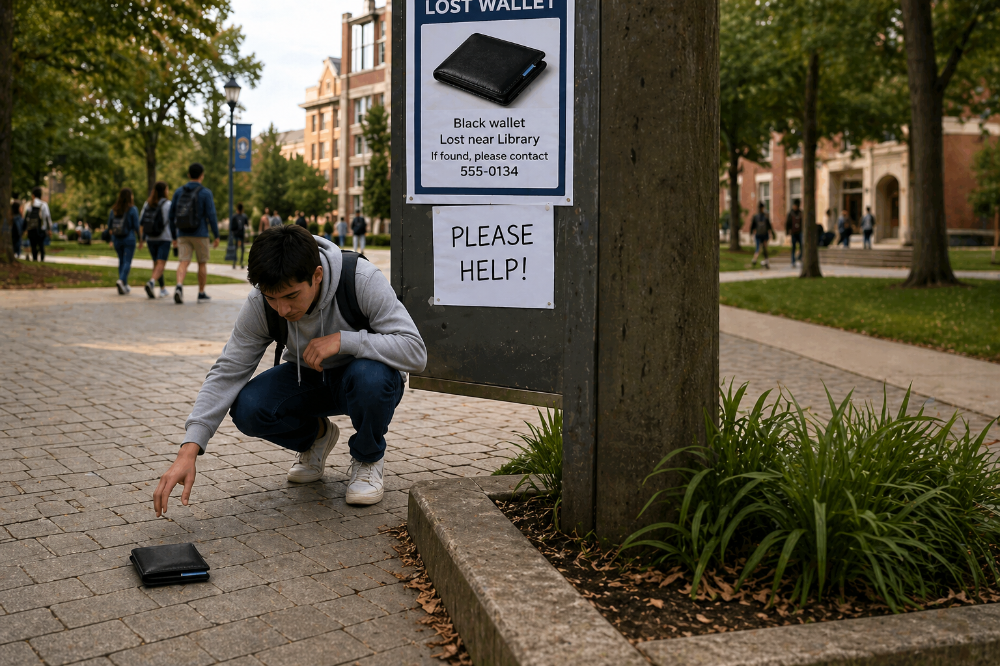
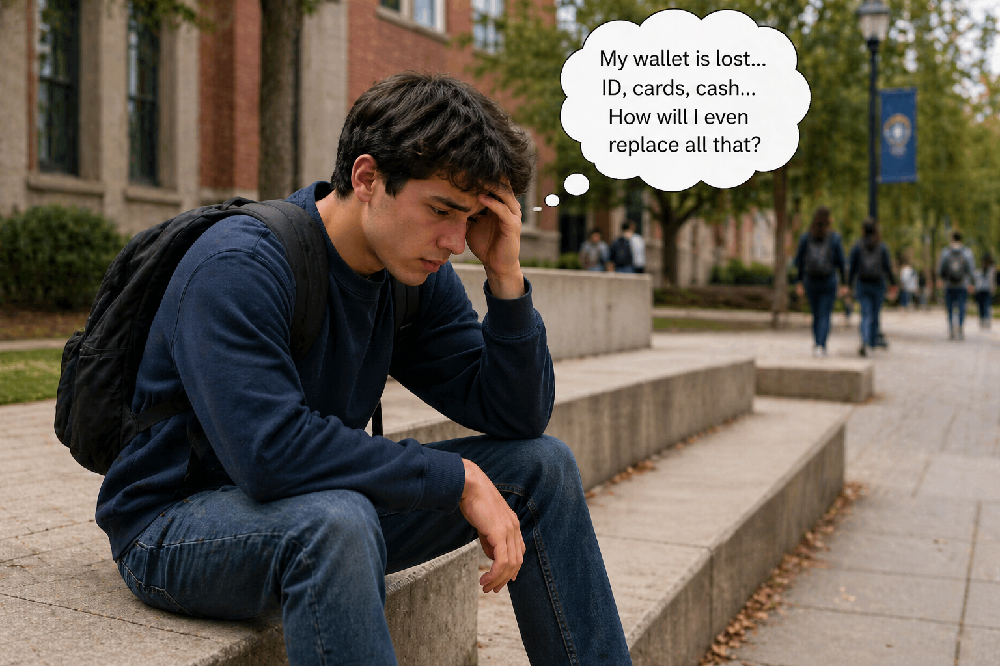
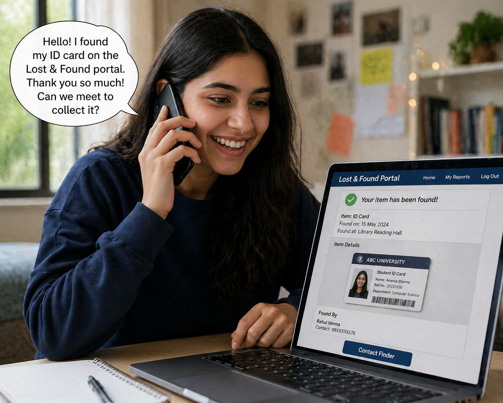

University Lost & Found Portal
Log In
Sign Up
Switch to Light
Welcome to the University Lost & Found System

Found someone's lost item?
Report It

Worried about your lost belongings?
Join Us to Find It

Did you find your item?
Call the Finder